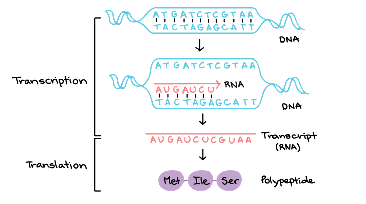
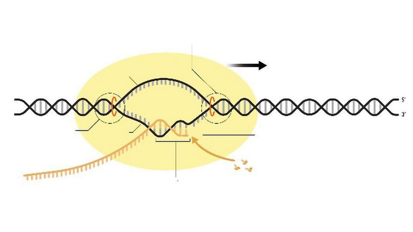
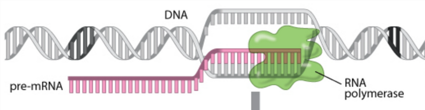
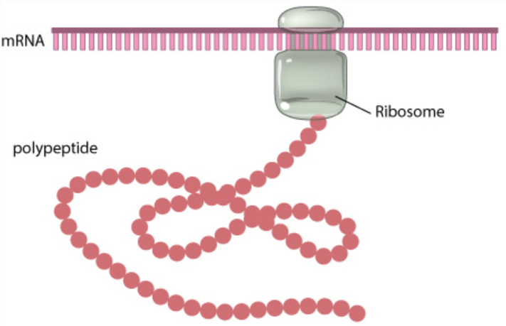
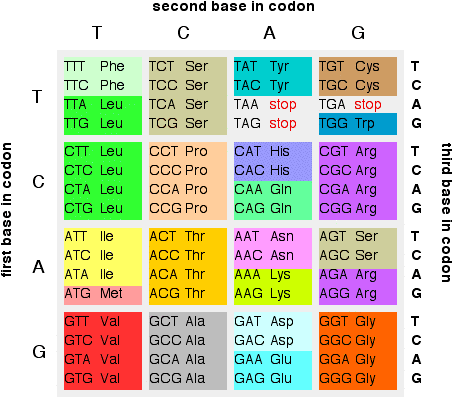
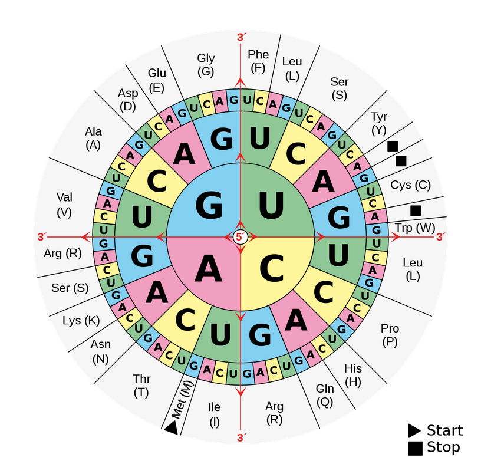
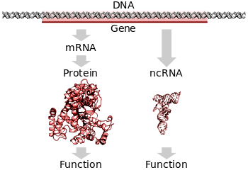
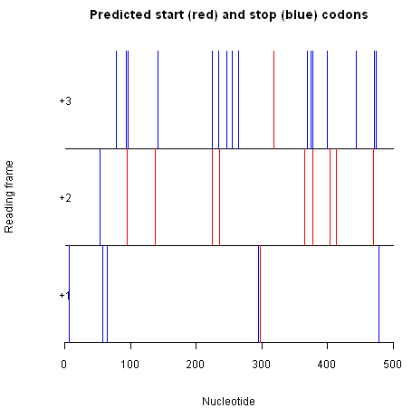
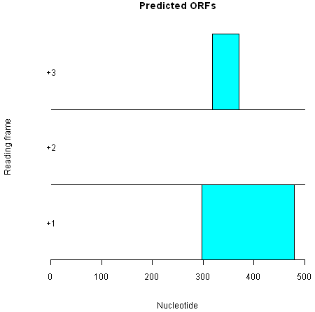

1.4 Gene Finding
1 Transcription
1.1 Transcription
Transcription is the process of copying a segment of DNA into RNA, which is then used to synthesize a polypeptide.

1.2 DNA polymerase
RNA polymerase binds to promoter DNA, which are located close to the start sites of genes.
It then generates a transcription bubble, which separates the two strands of the DNA helix. This is done by breaking the hydrogen bonds between complementary DNA nucleotides.

1.3 Pre-RNA
While RNA is produced in the transcription bubble, we call it pre-RNA. Some base sequences make the transcription stop.

1.4 Ribosomes
Ribosomes translate RNA into polypeptides.

1.5 Messenger and non-coding RNA
The segments of DNA transcribed into RNA molecules that can encode proteins are said to produce messenger RNA (mRNA).
mRNA comprises only 1-3% of total RNA samples. Less than 2% of the human genome can be transcribed into mRNA.
1.6 Non-coding RNA
Other segments of DNA are copied into RNA molecules called non-coding RNAs (ncRNAs).
At least 80% of mammalian genomic DNA can be actively transcribed, with the majority of this 80% considered to be ncRNA.
There is no consensus in the literature on how much of non-coding transcription is functional.
1.7 Exercise: DNA to RNA
ATGAACAACCAACGGAA2 Codons
2.1 Codons
Codons are triples of bases correspond. These are the units ribosomes use to translate between bases and aminoacids.
2.2 Mapping codons
Many representations are possible to show the translation between codons and aminoacids.

2.3 Possible aminoacids
Aminoacids have four different types: basic, acidic, polar and non-polar.

2.4 Mapping codons
Translate into the corresponding aminoacids:
ACUGAGACACUUGCG
2.5 Exercise: finding codons
In the full sequence, genes don’t have to start at the beginning of the sequence. What are the possible codons in the following sequence?
ACTTGACTACTTTA2.6 Example in R: translating to aminoacids
> s
183-letter DNAString object
seq: ATGGGGCTCATTCAAGAAGAATGGAGCGATCAAAGTGTTACG...CATCTGACCACCCGAGGGGGAGAGCCGCACATGATAGTTAG
> Biostrings::translate(s)
61-letter AAString object
seq: MGLIQEEWSDQSVTGFQERNLKHVEHNEQEEKICDHAPHAAAHSPGVPSDHPRGRAAHDS*3 Genes
3.1 Genes
The molecular gene is a sequence of nucleotides in DNA that is transcribed to produce a functional RNA. Genes can lead to the production of sequences of aminoacids. That is, proteins.

3.2 Starting and stopping
There are particular codons that can imply the start and the end of genes:
- Genes start with
ATG(Methionine). - Genes end with
TAA(Ochre),TAG(Amber),TGA(Opal).
3.3 Exercise 1: finding potential genes
Find the possible genes in this sequence:
ATGGGGCTCATTCAAGAAGAATGGAGTAACTAG3.4 Exercise 2: finding potential genes
Find the possible genes in this sequence:
GCTCATTCAAGAAGAATCGAGTAACTGCAG4 Computationally
4.1 To find potential genes
- Find the potential start and end codons in the sequence.
- Match start codons to end codons. These end codons must be after the start codons, and there must a multiple of three bases between them.
- Extract the obtained sequences between start and end.
4.2 1, 2 and 3 reading frames
We can name sites as reading frames 1, 2 or 3 depending if their nucleotide has remainder 0, 1 or 2, respectively when divided by three. Start and end sites must be in the same reading frames.

4.3 Matching starts and ends
In each line, we march starts to the first available end.

5 Next
5.1 Next classes
We will learn how to look for codons and genes in DNA sequences in R.